La Pizzería “Mario`s Family” se inauguró el 12 de mayo del 2023, en la zona de Pampahasi, la cual se encuentra en las cercanías de la calle 2 – Samapa, comenzo a ganar fama por su gran servicio, variedad de sabores, calidad de ingredientes y grandes promociones. Al ser éste un nuevo emprendimiento, con el paso del tiempo tendrá un gran potencial para llegar a competir con las grandes cadenas de comida rápida en la ciudad de La Paz.
Llame al siguiente numero: 
69926425
Escribanos al Whatssap
69926425
O realiza tu pedido de manera virtual